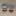

現役酒精爐
以下介紹阿前購買的與自製的酒精爐類型，一些DIY的辛酸血淚史(誤。還有其他買過太爛丟掉的，或DIY沒拍照做失敗品就丟了就沒放了。
索引
阿前第一個入手，也是最常帶上山的酒精爐，此款酒精爐燃燒效率高，製作要求也較高，不如買現成的來燒！
中間開口點火即可預熱酒精並快速啟動，透過凹折毛細管壁向小孔噴發，噴發時連帶搶走中心火焰，達到只有小孔噴火的效果。
內層粉紅色是因為一開始是買五金行工業酒精（甲醇）來燒導致染色，甲醇有毒！燒起來燻眼睛！不推薦燒甲醇！

賣場搜尋：輕量化酒精爐、旋風酒精爐、毛細酒精爐，或以圖搜圖找類似的產品。
看 YouTube頻道 Lifestyle C.C Land 入坑，上淘寶買對應的材料包製作。
內層捲上防火棉，讓酒精揮發速率降低，達到延長燃燒時間的效果。
此款酒精爐很方便自製，只要買得到對應的材料的話。


賣場搜尋：小島酒精爐，防火棉酒精爐，或以圖搜圖找類似的產品。
也可以買類似的材料自製，詳情可以看爐心材料測試。
罐頭酒精爐 (墊高可燒異丙醇) #開放式 重量23g DIY
嘗試使用罐頭製作一般的貓罐酒精爐，此款設計可不用爐架，鍋子直接疊上去也可燃燒。非常好DIY的爐子。
沒額外的包覆式爐架，爐體火焰外露較怕風，更需要擋風板。
注意第一次燃燒罐頭外壁的漆被燒掉時要離遠一點，感覺有毒。

後來嘗試使用異丙醇燃燒容易黑鍋，又在網路上查到有款 IsoClean 異丙醇酒精爐可以燒異丙醇的時候極大程度的不黑鍋，但打孔的設計與貓罐酒精爐非常的類似，發現原來只要讓火焰口與鍋底維持1.2cm左右的高度，即可達到類似效果。
具體原理應該是火焰層流穩定，與空氣混合比較佳，所以才可以燃燒較完全（就不容易黑鍋），但燃燒效率稍微降低，燃燒時間更長；好似上方疊超密的鐵網讓火焰通過的時候可以跟空氣更好混和也有類似效果。
IsoClean (後來改名為Multi-Fuel，因為其實也可以燒別的燃料)的製作流程影片：How we make the Multi-Fuel stove by FLAT CAT GEAR
自帶爐架的改良版 重量47g DIY
為了達到IsoClean自帶爐架可燃燒異丙醇減少黑鍋的效果，嘗試綁上螺絲當作爐架，但放置在內外差異非常大！
改良失敗 放置在爐子內，螺絲因受火加熱，間接導致異丙醇加熱沸騰，讓異丙醇蒸氣過度膨脹，反而由進氣孔噴發火焰，空氣沒辦法透過進氣孔進氣維持完全燃燒，導致黃火黑鍋！
改良成功 調整到綁在外圍，終於出現較平穩的藍色火焰，有帶一些部分黃火，但還可以接受，燒完水後鍋子僅有邊緣稍微黑鍋；應該也可以再嘗試縮短螺絲高度。


雪碧330ML側燒酒精爐 #套筒式 重量13g DIY
使用雪碧罐製作雙層酒精爐，以側邊壓痕的方式來製作毛細管道外，同時兼當噴火孔，因為不用額外打小洞，製作較容易一些，燃燒效率也還不錯。
因爐體稍高，一開始有可能難以點著，縮到5公分以下的高度應該更理想；爐子熱了之後也可以直接當爐架放上鍋子燒水。
參考YouTube上的製作教學製作而成：〔語音版〕自製鋁罐酒精爐｜調整及修改鋁罐酒精爐〔Vocal version〕DIY a can stove and to adjust to be more efficient


UCC274ML摺翼爐 重量15g #雙層加壓 DIY
利用UCC鋁罐錐狀瓶身設計，瓶口直接當成內壁，並且剪切凹折後縫隙可兼當燃燒孔，一兼二顧摸喇阿兼洗褲。
需要兩個UCC罐子，一個當酒精盤，一個尾部打洞當外壁與瓶口當內壁。
初期燃燒效率意外的極好，水很快就滾了，但後期因內層空間太大，殘火延燒很久才熄滅。若要改良應該要嘗試降低爐子高度(但瓶口也要切一下)。


UCC艾洛瑪290ML摺翼爐 重量14g #雙層加壓 DIY
UCC274ML摺翼爐的縮小版，這個版本的瓶口材質較堅固，使得縮小版重量沒差很多。爐體是改由類似能量飲料較小的罐體製作。
瓶口較小初期預熱啟動較慢，但啟動後效果不錯。且縮小內層空間後，壓力稍增，且殘火較快結束，驗證了原本的想法。
折翼的長度太短，密封度不佳，導致實際上是由一整圈外圍竄出火焰而非縫隙打孔的區域。但貌似不影響燃燒效果。


UCC184ML雙層酒精爐 #雙層加壓 重量9g DIY
簡易製作的雙層酒精爐。一樣利用兩個鋁罐製作而成，內層爐壁利用鋁罐底凹槽圈的特性卡住隔出雙層空間。
製作上要注意底部擴張要確實，與如果要推到很底，頂部預留的空間最好還是預折/剪一圈，以符合底部弧度（或是底部找全平底罐子製作）。


UCC274ML+烏龍茶320ML酒精爐 #雙層加壓 重量14g DIY
參考YouTube上的教學，可能因為腔體較大，中空管不易加熱酒精，預熱很慢（異丙醇約３分半，乙醇２分鐘），但燃燒起來效果穩定，20ML乙醇可燒開400ML水。
這個爐體作法可以很安全的接合爐體，不太容易歪來歪去壓壞鋁罐，點這裡看教學。


UCC184ML毛細酒精爐 #毛細管道 重量9g DIY
發現網路購買的手工毛細酒精爐，其實網路上也教過類似做法，就跟著做了：
YouTube: 酒精真的很危險？教你用鋁罐自製安全又好用的酒精爐！【胡思亂搞】
Facebook: 酒精爐簡易版製作
初次測驗空燒異丙醇15ml原本燒了快14分，不過經過密封與彍一下孔洞實際燒起來效果也是很好，變成7分多鐘燒完；搭上爐架使用杯子盛水，燒乙醇15ml花7分鐘燒開400ml的水，而且是大滾(氣溫大蓋是25度)，燒了9分鐘之後才滅。


實際上製作發現用大小一致同一個罐子的狀態下，外圈邊緣跟內圈應該都要密封，酒精蒸氣才能只從洞口噴發燃燒，但手邊只有醜醜的鋁箔膠帶，黏起來也是有點醜醜的。而且燃燒後黏合膠會滲出來，不知道長期有沒有啥影響。
仔細觀察別人可以拿出來賣的東西果然有差，罐體有特別挑選過，密封性很好，凹折的也很美，洞也打得漂亮，還做過很好的打磨。自己亂做的就醜醜的哈。
UCC184ML毛細酒精爐II #毛細管道 重量8g DIY
跟UCC184ML毛細酒精爐一樣的做法，只不過不用鋁箔膠帶去封那個縫隙了，而是直接將外圍往內折蓋住縫隙。內緣也不特地封起來，燒起來也還可以。
熟能生巧，做得更好看了點，火焰效果也不錯，啟動時間也快，體感約15秒。


改用冰箱內的冰水(大約10度)來測試，25ml乙醇煮500ml的水，9分鐘底部產生許多氣泡，微滾而已沒大滾，約9分半熄滅，還是須注意水溫高低影響沸騰時間的問題。
這次使用直徑約10cm的杯子搭配擋風板，火焰竄很高，把手有點燙手，須小心。

打磨可樂200ML酒精爐 #毛細管道 重量13g DIY
參考這個教學製作而成：易拉罐螺旋火焰出火增压酒精炉制作教程，把外壁、內毛細管壁、噴焰孔拆成三個部件，打洞與組裝比較方便一些。
不知道改用罐頂當作管壁，上面一圈額外的金屬環結構上有沒有影響，又或者三個部件組裝的中空較多，使得整體更偏向雙層加壓結構，啟動時間比UCC184ML毛細酒精爐II慢了一點（大約30多秒）。
也是大火力類型的爐子，感覺應該要用寬一點的鍋才能完整利用到熱能。

這次特地凹折孔洞形狀讓他有點螺旋感


大小套嵌酒精爐 #雙層加壓 重量10g DIY
參考這個教學製作而成：【日本露營野營】5分鐘自製酒精爐DIY～又研究出有意思的酒精爐啦！最新結構～這次製造過程超簡單/手殘黨也能做喔🔥Alcohol Camp Stoves#自制酒精爐—（有字幕）。
使用了可樂200ML+UCC184ML兩種不同大小的罐子來分別做成內外壁。
原作沒有凹內毛細褶痕，但因為這次製作為了讓內壁可以完美貼合罐底，還是參考了一般毛細酒精爐內壁的作法，其實應該也是可以不用折直接套。
啟動時間也是約30多秒，外環打孔半徑較大，分焰形狀很美，沒特別測試燒水，看起來也是大火力類型，空燒10ml乙醇耗時03:53熄滅。

大小套嵌酒精爐(套鐵罐版) #雙層吸附 重量26g DIY
嘗試中間內壁換成鐵罐，讓爐體更穩固，可以直接放鍋子。
但因為鐵導熱慢酒精不容易燒起來容易熄火，所以乾脆又在夾層放了陶瓷纖維棉，由底部露出的一小截陶瓷纖維棉幫助預熱。也因為鐵導熱慢所以酒精較不容易快速的氣化，可以穩定燃燒速率。

打磨可樂200ML酒精爐II #毛細管道 重量15g DIY
打磨可樂200ML酒精爐的第二版，只有12折6孔，組合方法也完全照原始教學易拉罐螺旋火焰出火增压酒精炉制作教程製作，使用三個罐底，但發現罐底對罐底接合其實很容易有縫隙，要注意要壓得非常實，酒精氣化後容易從縫隙中竄出，效果可能會打折。
不過罐體不小心做太高，初次點火熄滅的機率變大。
改成六孔發現其實並不會燒得比較久，其實孔洞的粗細反而影響比較大，第一次打孔較細，空燒10ml乙醇可以燒04:36，但旋轉火焰沒第一版那麼明顯；第二次將孔擴大再凹折更多一些，雖然旋轉火焰更明顯了，但燃燒時間就馬上只剩03:37，感覺跟第一版功能有點重複，有點可惜。
* 小孔徑vs大孔徑

燒水實測，可能因為爐子較高，離杯底距離更小，更延長了一些時間，25ml酒精煮400ml常溫水10分鐘燒開，13:31全部燒完。但火焰竄太高導致整個杯子把手都很燙，這爐子可能只能用在鍋子了。


伯朗240ML陶瓷纖維加壓酒精爐 #雙層吸附 重量15g DIY
一般雙層加壓爐需要等待酒精在夾層中氣化後產生壓力噴出，此款在夾層中心放置陶瓷纖維，直接將酒精完全吸附至夾層中，啟動可後在夾層內快速加壓，火焰爆發出來，聽得到火焰噴發的氣流聲音。
但缺點顯而易見就是火力消耗較快，還有因為陶瓷纖維會吸附太多的酒精。初始酒精量必須大於20ml，爐子中心才有殘餘酒精可以做預熱的動作，但一旦啟動完成後，火焰的高壓就算直接將鍋或杯子疊在上方也不會使火焰熄滅。

IonStove III #開放式 重量19g DIY
為了用杯子燒水重製IonStove，前一個重製版本IonStove II的燃燒結果有點出乎意料所以又再做一次。
這是此用了牛奶花生鐵罐平底與雪碧罐底製成，並且改回初代的打孔設計。
牛奶花生的罐的尺寸有個微小的差異，雖然外表看不出來但其實比汽水罐還要小一點，但卻又可以完全緊密接合，之後如果要做其他平底酒精爐也可以考慮搭配使用。
偷懶透過直接燃燒爐體外表以方便刷掉漆面，鐵罐與鋁罐呈現截然不同的顏色，但燒完真的很臭，連爐體都散發臭味，感覺超有毒。

燃燒使用X型爐架，因開口較小，加上爐體主要為鐵罐材質，要達到工作溫度比鋁罐慢，燒起來後火焰幾乎限制在一個小區域，不像前一個重製版本IonStove II一樣向外噴發。

有風的時候火焰會飄出來，但X型支架的擋風效果還可以，要完全不飄就是要搭配擋風板。
燃燒時間跟初代一樣久到爆炸，使用20ml乙醇燃燒300ml常溫水，約20幾分鐘水呈現中滾狀態，到熄滅來到驚人的28:24。
此爐子的定位應該就是適合小杯子與慢燉使用，也想不到可以怎樣改良了。
UCC氣泡黑咖啡搭雪碧酒精爐 #雙層加壓 重量14g DIY
前陣子又在YT上無意看到使用罐頂斜面的設計來製作的酒精爐，打孔的位置更靠上方，與之前說危險的形狀設計不太一樣。
但考量到空氣混合導致意外氣爆問題，推測倒入的酒精液面高度應該至少要高過連接內外層的孔洞的大小(15ml以上)比較保險。
*不知是因為用汽水罐頂當底的凹凸不平，還是夾層沒剪裁好，有點歪斜(一邊3.7cm，一邊3.5cm)。

高爐體設計
一開始的爐體因為UCC氣泡黑咖啡的瓶口設計非常堅硬難以剪裁，於是只好完整的使用，高度達到了5公分左右。因為夾層非常的大，加上中間預熱孔非常小，所以啟動時間非常的慢，三分鐘後才啟動。


疊上鐵網觀察火焰燃燒反應，火焰竄得非常之高。
高爐體實際燒水
上鍋後有驚人的反差，因爐高較高，與包圍式擋風板限制供氧，鍋面距離過近，加上過大的夾層空間，加壓效果非常不明顯，燃燒的效果意外的類似雪碧IonStove III，火焰限制在一個極小的區域內燃燒，且燃燒緩慢。受風吹後才比較容易觀察到火焰從孔洞噴發的效果。


若使用此次燒水的爐架與鍋具搭配，水幾乎只是小滾。
不過若蓋上蓋子還是可以看到蒸汽推開蓋子的效果，推測其實這個組合應該可以拿來煮飯！？
初步推論
空燒狂放的火焰與上爐架鍋具的差異，更令人確信爐體高度與爐架搭配，以及爐架本身設計都密切相關，之後若有機會應該再製一個專屬X型爐架，稍微加大距離鍋底的空間再來測試。
縮短爐體
縮短至3.6公分左右，夾層縮小，啟動更快，這次花了一分半左右啟動；壓力變大，且搭配爐架離鍋底更遠，含氧量更高，馬上變回高耗燃料型。

19ml乙醇燒300ml常溫水，6分30秒水超級大滾，約9分多鐘熄滅，但用杯子其實大部分熱量都流失了，若用底更大的鍋子來燒感覺更有效益。
內爐壁打孔毛細酒精爐 #毛細管道 重量14g DIY
將嘗試將分焰孔打在內側爐壁毛細管上的設計，由兩個雪碧罐取兩個頭與一個尾製成，製作簡單，不太會不小心壓壞之外，外觀也還蠻漂亮的。
雖然燒起來根本看不出火焰到底有沒有透過毛細管道出口燃燒，但搭配X型爐架得到一個非常穩定的火焰，也有燃燒一段時間後增溫火勢慢慢增大的曲線。
使用15ml乙醇燃燒300ml的常溫水，剛好10分鐘水中滾，效果良好，燒到約12分鐘時想用鐵網蓋住看看燃燒形狀結果缺氧火滅了，再次點燃內部乙醇還可以再燒約30秒左右。


移開杯子觀察燃燒，火焰竄很高。
後續重新點燃，觀察火焰有個固定時長頻率的波動，猜測毛細管應該還是有推力效果吧，若是單純燃燒正常說不太會有這種太規律的波動。

咕嚕康普茶外打孔酒精爐 #毛細管道 重量12g DIY
家樂福發現的咕嚕康普茶鋁罐裝，標籤可以直接撕掉，完全省去打磨的功。內層因為是剪開再釘起來，應該沒有很密合，但燒起來還可以。
X型支架因為是薄薄鋁片折疊的，架起來有點歪，如果要用這種支架應該還是要買一下。


乙醇應該約20~30ml左右，燒400~500ml左右的水，10分鐘後水滾，火焰持續約12分鐘。

UCC+牛奶花生+薑汁汽水酒精爐 #雙層加壓 重量26g DIY
與內爐壁打孔毛細酒精爐一樣是打孔在內側，只不過這次是純粹的雙層加壓式。
使用UCC Black 274ml的罐口當內壁，牛奶花生鐵罐上半部當接合組裝用的殼層壁，薑汁汽水罐當容器與裝飾壁(測試時原本使用雪碧罐，後來覺得薑汁汽水更漂亮換上)。鐵罐讓組裝上不容易扭曲，周圍縫隙用鋁箔膠帶貼一圈密封。
搭配X型支架燃燒限制在杯緣的效果不錯。


搭配包圍式爐架火焰竄出來燒到把手的問題，把它往內推一點，留多一點空間在靠手把處即可。
咕嚕康普茶側燒酒精爐 #套筒式 重量8g DIY
直接讓毛細壁外露當作燃燒孔，還可以直接把杯子疊在上方，進一步達成封閉加壓式的效果，省去爐架。
因為外露孔洞特多，點火起來之後會快速燃燒起來，有點可怕，風大的時候要超級小心，這時就要快點疊杯子鍋子上去幫助穩定火焰輸出了。


UCC184ML硬幣酒精爐 #封閉加壓 本體重量7g 預熱盤重量4g DIY
原本之前做的硬幣酒精爐因為不太方便皆以丟棄，但因為這種類型的爐子太經典了，最後還是重做了一個新的當作紀念。
上方盤面更小，基本上更不可能透過上方預熱來啟動，必須完全靠底部預熱。
鑽洞不小心割破一刀變成斜洞，就當作是特色吧QQ。
初始預熱酒精不用放太多，測試時放太多一開始火焰太大了太恐怖，而且一瞬間酒精氣化太多也會浪費掉太多燃料；從底部預熱啟動的速度其實超級快。
打孔在外側的關係，杯子一樣可以直接架在上面沒問題。


伯朗240ML燈芯酒精爐 #燈芯式 重量12g DIY
類似酒精燈，有燈芯在中央的設計，重點設計在燈芯用一個鋁罐側邊斜剪一片鋁片捲著棉心包覆，並且不能捲太緊，讓他有一些額外空隙可以應用毛細現象與加熱氣化酒精的通道，鋁片還可以傳導熱能到底下幫助酒精氣化。
燈芯外面一圈打孔，除了讓酒精更好填裝之外，在加熱後期氣化壓力提高後，可以轉化為封閉加壓式的燃燒孔，取代燈芯燃燒。
實測約10~12ml左右乙醇8分多鐘可以燒開200ml的常溫水，並且燒了20分鐘左右才結束，效率與燃燒面積都很適合小杯子使用。


雪碧330ML三芯酒精爐 #燈芯式 重量17g DIY
三個燈芯的設計，用了更厚實一點的陶瓷纖維，初始火焰範圍更大。搭配更小的杯子煮水，火焰有些溢出但也還行。

OOHA半邊酒精爐 #毛細管道 重量14g DIY
避免燒到杯子手柄，只開半邊的孔。孔開在外側也方便直接架杯子。

小杯用鋁盒爐組 #毛細管道 重量21g DIY
為了近一步輕巧化給小杯煮水用，做一個可以塞進鋁盒中的爐體，並且搭配專用爐架，直接收納在鋁盒中。


整體展開內容物：

因為高度特矮，爐架又近一步佔據空間，爐架設計的更透氣一點避免一開始燒不起來，或後續架上杯子後熄滅。但還是要等完全啟動後再上鍋才比較不容易熄滅。也因為爐架超矮，燃燒速率也很慢，但就比較不容易燒到杯子把手。

鋁盒鐵罐側燒爐 #套筒式 重量20g DIY
雖然說製作方法類似毛細爐要壓褶痕，但摺痕很粗，管道只是單純的酒精氣化管道，實際上已經類似封閉加壓爐了。鐵罐可以兼當爐架與穩定燃燒速率。而且這種摺痕套筒類型的爐體啟動較快，不容易遇到熄火問題。
韋恩210ML陶瓷纖維側燒爐 #套筒式 重量24g DIY
直接套過外圈陶瓷纖維吸附中心酒精燃燒，因為內壁鍋架層太高很難點火，改由外側繞一圈倒酒精，並由外圈點火。因為整個爐體小，吸附層寬度不足，不容易倒入酒精。中間壁開大孔也是為了讓外圈容易點著，不開孔的話幾乎很難點火。

UCC274ML瓶口爐 #雙層加壓 重量12g DIY
利用UCC274ML瓶口當作內壁的爐子，外層使用咕嚕康普茶鋁罐。很普通中規中局的爐子。

笑臉爐 #燈芯式 重量15g DIY
受アルコールストーブ製作過程ライブ D IY Alcohol Stove啟發製作的可愛爐子。
原本只是想製作普通的雙層加壓爐，想說頭頂燃燒口當作火焰頭髮。但笑臉開口太小火焰會點不著，後來就改良於眼睛塞進捲入陶瓷纖維的鋁罐壁管子，透過眼睛先預熱，眼睛連接底部的鋁管可以再加熱底部，連鎖讓嘴巴開口處也加入燃燒。